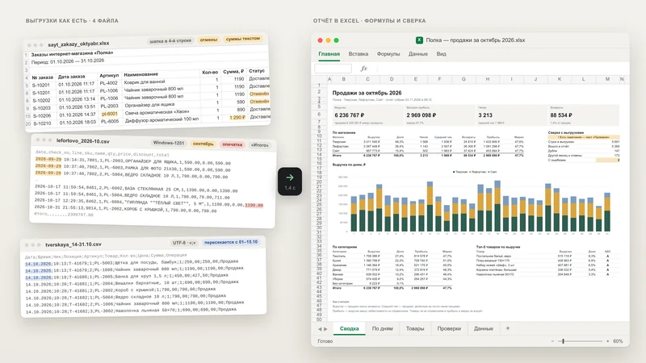
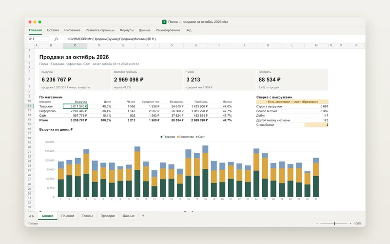
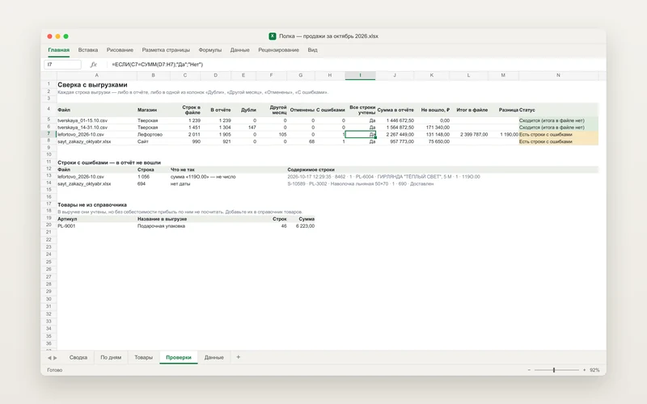
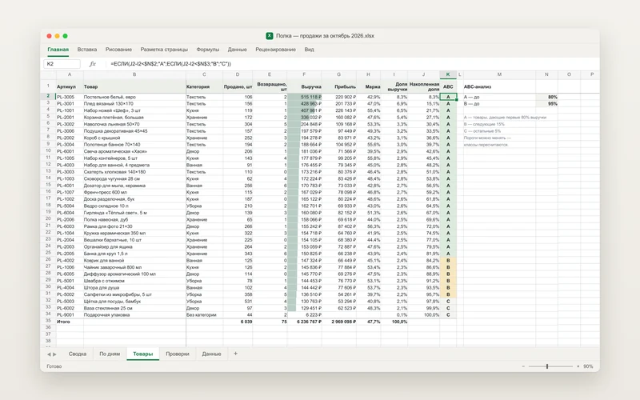
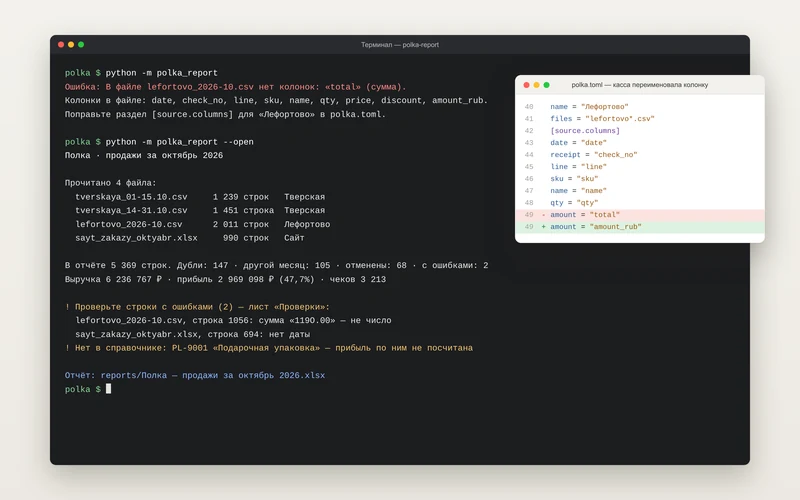

Отчёт по продажам для «Полки»
Вымышленный магазин товаров для дома: две точки и сайт, у каждого своя выгрузка. Скрипт за секунду сводит их в один отчёт в Excel с формулами и графиком — и показывает, куда делась каждая строка, которая в отчёт не попала.
- СтекPython · pandas
- На входеCSV и Excel как есть
- ОтчётExcel, итоги — формулы
- Тесты114 тестов на pytest

Задача
У «Полки» два магазина и интернет-магазин. Каждый месяц из трёх систем приходят выгрузки: кассы отдают CSV в разных кодировках, сайт — Excel с названием и периодом над таблицей. Их сводили руками: полдня копирования, а потом вопрос «почему не сходится с кассой».
Нужен отчёт, который собирается из выгрузок как есть, считает выручку и прибыль по магазинам, дням и товарам и объясняет каждое расхождение.
Решение
Положить выгрузки в папку и запустить скрипт — через секунду готов отчёт. Каждую цифру в нём можно проверить, а каждая отложенная строка видна с причиной.
- Выгрузки
- Чтение
- Чистка
- Сверка
- Отчёт в Excel
Читает выгрузки как есть
CSV в UTF-8 или Windows-1251, с «;», «,» или табуляцией. Excel, где таблица начинается не с первой строки. Колонки — в любом порядке и с любыми названиями.
Приводит данные к одному виду
Суммы «1 290,50 ₽» и «1.290,50», даты «01.10.26» и «2026-10-01», артикулы «pl1001» и «PL-1001». Возвраты — с минусом, даже если касса пишет их без него.
Не считает лишнего
Строки, попавшие сразу в две выгрузки, берёт один раз. Отмены и дни соседнего месяца откладывает, строку «Итого» не путает с продажей.
Пять листов в отчёте
Сводка с графиком на одном листе A4, выручка по дням, товары с ABC-анализом, проверки и все продажи одной таблицей с фильтрами — для своих сводных.
Названия колонок, справочник товаров с себестоимостью, пороги ABC и папки лежат в одном файле настроек. Если касса переименует колонку, скрипт остановится и скажет, какую строку в настройках поправить.








Как устроено
Чтение, чистка и сборка отчёта разделены. Читатели знают только про форматы файлов, чистка — про правила учёта, а отчёт получает готовую таблицу продаж и список отложенных строк с причинами.
- readers.py
- clean.py
- report.py
- Excel
parse.py- Числа, даты, артикулы и месяцы — чистые функции
config.py- Чтение настроек и понятные ошибки в них
readers.py- CSV и Excel: кодировка, разделитель, поиск шапки, строка «Итого»
clean.py- Одна таблица продаж и учёт каждой строки, которая в неё не вошла
aggregate.py- Те же итоги в pandas: магазины, дни, товары, ABC
report.py- Excel-файл: листы, формулы, форматы, график
__main__.py- Запуск из терминала и короткая сводка
polka.toml- Настройки магазина: источники, колонки, справочник товаров
Ключевые решения
Итоги — формулы, а не числа
Отчёт проверяют бухгалтер и владелец, им важно видеть, откуда цифра. Формулы ссылаются на колонки умной таблицы и читаются без расшифровки: =СУММЕСЛИМН(Продажи[Сумма];Продажи[Магазин];B11).
Excel и pandas считают одно и то же
Рядом с формулой записано готовое значение, поэтому цифры видны даже в превью почты и Telegram. Тест пересчитывает все 5 881 формулу в LibreOffice и сверяет с pandas до копейки.
Каждая строка на счету
Для каждого файла: строк в файле = в отчёте + дубли + другой месяц + отмены + ошибки. Равенство проверяет формула на листе «Проверки», а сводка сразу показывает, если что-то не сошлось.
Дубль — только из другого файла
Совпадают магазин, чек, позиция, артикул, количество, сумма, дата и операция. Две одинаковые кружки в одном чеке — не дубль, даже если касса не пишет номер позиции.
Опечатка не останавливает отчёт
Строка с ошибкой откладывается с номером и причиной, остальное считается. А неверные настройки останавливают сразу — иначе отчёт был бы тихо неправильным.
Прибыль не выдумывается
Если товара нет в справочнике, продажа идёт в выручку, но маржа считается только по товарам с себестоимостью. Сам товар попадает в список «добавьте в справочник».
Тесты
114 тестов проходят за 10 секунд. Самый важный пересчитывает все формулы отчёта в LibreOffice и сравнивает с pandas: если Excel и код разойдутся хоть на копейку, тест упадёт.
pytest -q
........................................................................[ 63%]
..........................................[100%]
114 passed in 9.65s
ruff check .
All checks passed!- Суммы, даты и артикулы во всех встреченных форматах и отказ на мусоре вроде «119O.00»
- CSV в трёх кодировках и с четырьмя разделителями, Excel с шапкой в четвёртой строке, строка «Итого»
- Дубли на стыке выгрузок, возвраты, отмены, чужой месяц и товары не из справочника
- Номер строки в файле и причина для каждой строки с ошибкой
- Тексты ошибок в настройках и выгрузках
- Структура отчёта: листы, умная таблица, форматы и формулы вместо чисел
- Пересчёт всех формул в LibreOffice и сверка с pandas до копейки
- Запуск из терминала: сводка, выбор месяца и коды ошибок
Тесты и линтер запускаются на GitHub при каждом изменении кода — вместе с пересчётом в LibreOffice.
Открытые вопросы
- Выгрузки нужно положить в папку: подключения к 1С или API касс нет.
- Читает CSV и XLSX. Старый .xls нужно один раз пересохранить в Excel.
- Один отчёт — один месяц. Сравнения с прошлым месяцем и планом нет.
- Себестоимость берётся из справочника, одна на месяц — без партий и FIFO.
- Данные кассы скрипт не исправляет: строку с ошибкой нужно поправить в выгрузке.
Результат
Код с тестами и README: как установить, описать колонки своих выгрузок и запускать двойным кликом на Windows. И пример отчёта — его можно открыть в Excel и проверить любую цифру.
Нужен такой отчёт?
Пришлите пример выгрузки и расскажите, что сейчас считаете вручную, — предложу решение и назову цену и срок до начала работы.